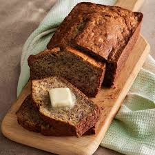

My Favorite Recipe
Bannana Bread
Ingredients
- 2 cups flour
- 1 tsp baking Soda
- 1/4 tsp salt
- 1/2 cup butter
- 3/4 cup brown Sugar
- 2 large eggs, beaten
- 2 1/3 cup mashed overripe bananas
Instructions
- Preheat oven to 350 degrees F. Lightly grease a 9x5 in loaf pan.
- Combine flour, baking soda, and salt in a large bowl.
- Beat brown sugar and butter in a seperate large bowl until smooth.
- Stir in eggs and mashed banana into flour mixture until just combined.
- Pour batter into the prepared loaf pan.
- Bake for 60 minutes or until a toothpick inserted into the center comes out clean.